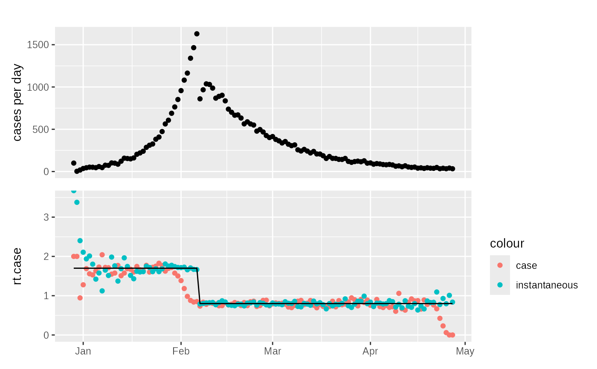

This function converts a line list into a daily count of incident cases, plus infections, admissions, deaths, test samples, test results if present. Censoring of these counts can also be defined. Whilst summarising various network measures such as the forward looking case reproduction number are also calculated.
Arguments
- df
a line list dataframe arising from e.g.
sim_branching_process()- a dataframe with columns:id (unique_id) - Patient level unique id
time (ggoutbreak::time_period) - Time of infection. A `time_period`
Any grouping allowed.
- ...
the grouping to include in the summarisation.
- censoring
a named list of column names (without the
_timesuffix) of the kind created bysim_delay()orsim_apply_delay(), and an associated function defining the delay of reporting that the column experiences. For this functiont(or.xfor a purrr lambda) will refer to theXX_timecolumn, i.e. whenever the event that is being reported happened andtimethe simulation infection time. N.B. since infection is not observed you can't censor it.- max_time
the censoring time for this observation. If this is a vector there will be multiple time series in the output
Value
a count data frame with additional statistics.
A dataframe containing the following columns:
statistic (character) - An identifier for the statistic, whether that be infections, admissions, deaths
count (positive_integer) - Positive case counts associated with the specified time frame
time (ggoutbreak::time_period + group_unique) - A (usually complete) set of singular observations per unit time as a `time_period`
Minimally grouped by: statistic (and other groupings may be present).
Examples
sim = sim_branching_process(
changes = dplyr::tibble(t = c(0,40), R = c(1.7,0.8)),
max_time = 120,
seed = 100,
fn_imports = ~ ifelse(.x==0,100,0)
)
#> .
#> .
#> .
#> .
#> .
#> .
#> .
#> .
#> .
#> .
#> .
#> .
#> .
#> .
#> .
#> .
#> .
#> .
#> .
#> .
#> .
#> .
#> .
#> .
#> .
#> .
#> .
#> .
#> .
#> .
#> complete
tmp = sim %>% sim_summarise_linelist()
p1 = plot_counts(tmp)
p2 = ggplot2::ggplot(tmp, ggplot2::aes(x=as.Date(time)))+
ggplot2::geom_point(ggplot2::aes(y=rt.case,colour="case"))+
ggplot2::geom_point(ggplot2::aes(y=rt.inst,colour="instantaneous"))+
ggplot2::geom_line(ggplot2::aes(y=rt.weighted))+
ggplot2::coord_cartesian(ylim=c(0,3.5))+
ggplot2::xlab(NULL)
patchwork::wrap_plots(p1,p2,ncol=1,axes="collect")
